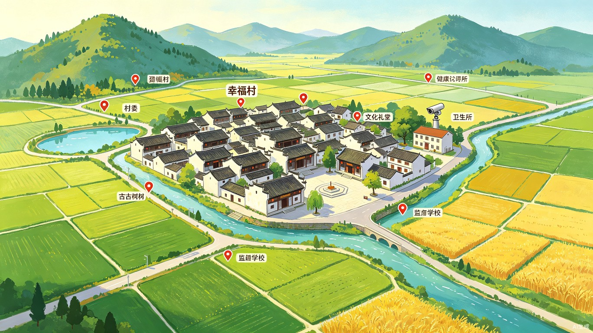

总人口
2,856
+12
总户数
986
+8
村集体收入
386万
+15%
人均收入
3.2万
+8.5%
党员数
128
-2
特色产业
6项
+1
已脱贫户
42户
100%
在建项目
5个
+2
村庄概要
XX省XX市
行政区划
6个
村民小组
12km²
总面积
振兴中
发展阶段
12
面积(km²)
18
自然村
2.8
户均人口
6
河流水系
土地利用
892
耕地(亩)
3,680
林地(亩)
520
园地(亩)
860
住宅(亩)
2座
水库山塘
15km
通村公路
98%
安全饮水
85%
绿化覆盖
基础设施
86%
道路硬化
100%
通电率
98%
自来水
95%
宽带覆盖
8个
活动场所
5条
公交线路
2座
卫生室
1所
小学

网格分组
第一网格
第二网格
第三网格
重点建筑
村委
文化礼堂
卫生所
古树古物
监控点
监控 A
监控 B
监控 C
村务公告
关于开展2026年度防汛抗旱工作的紧急通知
2026-06-28
2026年第三季度村民代表大会日程安排
2026-06-25
通村道路硬化工程竣工验收公告
2026-06-20
关于规范农村宅基地审批管理的通知
2026-06-15
近期村务公开
386万
村集体收入
312万
村集体支出
5个
在建项目
128万
惠农资金
8个
已完成项目
32人
公益岗位
重点工作进展
蔬菜大棚二期建设
68%
村道路灯安装工程
92%
智慧农业系统部署
45%
特色产业
人口结构
村两委与教育
5人
党支部委员
7人
村委会委员
8人
后备干部
3人
监委会成员
汉族98%
民族构成
100%
义务教育入学率
1,280万
产业总产值
266人
就业带动
2,860亩
产业用地
3个
新引进项目
产业分布
村域产业分布图
产业数量统计
12
企业数量
8
合作社
35
个体户
266
从业人数
520户
带动农户
2,860亩
产业用地
产值月度趋势
1月2月3月4月5月6月7月8月9月10月11月12月
各产业产值对比
1,280
产业总产值（万元）
品牌农产品
120吨
幸福有机米
85万枚
绿色土鸡蛋
60吨
手工豆制品
产业项目进度
蔬菜大棚二期 - 进度68% 施工延误7天
预计8月完工
养殖场扩建 - 环评审批中 待审批
预计7月中旬
农产品冷链仓库 - 已完工验收
2026-05-15
电商仓储扩容 - 进度85% 超预算5%
预计7月完工
有机农产品认证 - 3个产品获证
2026-04-20
产业详情
名称
类型
产值
从业人数
幸福有机农场种植业150万45人
兴旺养殖合作社养殖业130万38人
绿色蔬菜基地种植业120万32人
田园居农家乐乡村旅游110万28人
豆香坊加工厂加工业105万25人
乡村优品电商电商服务95万18人
锦绣编织坊手工艺品80万22人
丰收果园种植业65万15人
清水鱼塘养殖基地养殖业55万12人
幸福花卉种植园种植业48万10人
田园乐民宿乡村旅游42万8人
产业带动就业
产业投资统计
686万
总投资额
120万
扶持资金
450万
企业自筹
116万
银行贷款
520万
已完成投资
75.8%
投资完成率
环境监测
AQI
58
优
PM2.5
35
μg/m³
温度
26
°C
湿度
65
%RH
7.2
pH值
7.8mg/L
溶解氧
3.2NTU
浊度
12μg/m³
SO2
28μg/m³
NO2
0.6mg/m³
CO
人居环境评分
道路硬化率
95%
污水处理率
82%
宽带覆盖率
96%
环保设施
设施名称
状态
日处理能力
污水处理站运行中50吨/日
垃圾中转站运行中5吨/日
有机堆肥点运行中2吨/日
雨水收集系统运行中30m³/日
太阳能路灯正常运行120盏
生态建设指标
85%
垃圾分类覆盖率
92%
厕所改造完成率
78%
绿化覆盖率
能耗统计
186万
kWh
年用电量
42万
吨
年用水量
农村环境综合整治
村庄绿化提升
78%
黑臭水体治理
90%
畜禽粪污资源化利用
75%
秸秆综合利用率
88%
环保事件月度趋势
7月8月9月10月11月12月1月2月3月4月5月6月
垃圾分类详情
环境卫生评分
92分
卫生评分
85%
分类准确率
12人
保洁员数
积分制参与情况
积分制参与率
72%
积分兑换率
65%
28,560
累计发放积分（分）
志愿服务统计
156
注册志愿者
3,280h
服务时长
89次
服务次数
志愿服务团队
幸福村巾帼志愿服务队 - 32人
本月服务5次
青年突击队 - 28人
本月服务4次
银发先锋志愿服务队 - 45人
本月服务3次
环保志愿服务队 - 51人
本月服务6次
文明家庭榜单
- 1张建国2,860分
- 2李秀英2,750分
- 3王德明2,680分
- 4刘志强2,520分
- 5陈美华2,450分
- 6赵国栋2,380分
- 7孙丽萍2,310分
- 8周建华2,250分
- 9吴明辉2,180分
- 10郑秋菊2,120分
近期活动
2026-06-27
戏曲下乡演出 - 文化广场
2026-06-20
广场舞比赛 - 全村参与
2026-06-13
乡村读书日 - 农家书屋
2026-06-06
端午节包粽子活动
2026-05-28
文明家庭表彰大会
2026-05-15
母亲节慰问活动 - 关爱孤寡老人
道德讲堂 / 文化活动统计
24场
道德讲堂场次
1,860
参与人次
5项
非遗项目数
8个
文化团体数
文化活动日历（2026年6月）
日
一
二
三
四
五
六
0
1
2
3
4
5
6
7
8
9
10
11
12
13
14
15
16
17
18
19
20
21
22
23
24
25
26
27
28
29
30
文明乡风建设
村规民约修订完成
100%
移风易俗宣传覆盖率
88%
红白理事会组建率
95%
文明村创建达标
82%
非物质文化遗产
项目名称
级别
传承人
幸福花灯省级张明华
竹编工艺市级李秀兰
民间刺绣市级王玉芬
古法酿酒县级刘德贵
幸福山歌县级陈国强
事件处置漏斗
上报
45
分派
42
处置
38
闭环
35
党员管理
67
党员总数
5
预备党员
12
积极分子
矛盾纠纷统计
32件
纠纷总数
29件
已调解
3件
处理中
91%
调解成功率
网格巡查覆盖
网格巡查覆盖区域
绿色=已巡查 青色=巡查中 红色=待巡查
绿色=已巡查 青色=巡查中 红色=待巡查
82%
覆盖率
安全巡检记录
消防设施巡检 - 全部合格
2026-06-29
河道安全巡查 - 发现隐患1处已上报
2026-06-28
道路交通巡检 - 路况良好
2026-06-26
地质灾害隐患点排查 - 待复查
2026-06-24
食品安全检查 - 小卖部/餐饮店合格
2026-06-22
消防通道检查 - 2处堆放杂物已通知清理
2026-06-20
党群服务
12次
主题党日
8次
党员培训
156次
走访群众
48件
办实事
矛盾纠纷调解率
91%
调解率
信访量月度趋势
31件
本年度信访总量
28件
已办结
3件
办理中
90.3%
办结率
1月2月3月4月5月6月
近期事件记录
道路塌方修复 - 已完成
2026-06-28
村民饮水管道漏水 - 处置中
2026-06-27
农田灌溉渠道堵塞 - 已分派
2026-06-26
路灯损坏维修 - 已完成
2026-06-24
村内乱搭乱建投诉 - 待处置
2026-06-23
人均可支配收入趋势
32,680
2025年人均收入（元）
收入来源结构
收入增长对比
+7.1%
同比增长
2.18万
2021年收入
3.27万
2025年收入
+49.5%
五年增幅
社会保障
89%
养老保险参保率
95%
医疗保险参保率
62%
意外险参保率
78%
农业险参保率
电商与金融服务
56
电商从业人数
320万
线上年销售额
12,680
线上订单数
25%
外销比例
消费水平
18,520元
人均消费
32.5%
恩格尔系数
96%
家电普及率
公共服务设施
卫生室
已建成
文化广场
已建成
快递点
已建成
农家书屋
待建设
健身设施
已建成
养老服务中心
已建成
便民服务大厅
已建成
幼儿托管中心
待建设
帮扶与就业
45户
脱贫户数
18户
低保户数
86万
帮扶资金
6人
特困供养
23人
残疾人补贴
12个
到户项目
126人
新增就业
32人
公益岗位
360人次
技能培训
住房条件
48m²
人均住房面积
32户
危房改造
874户
自来水入户
821户
卫生厕所